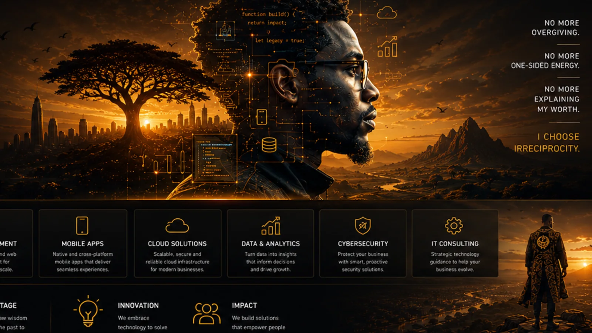
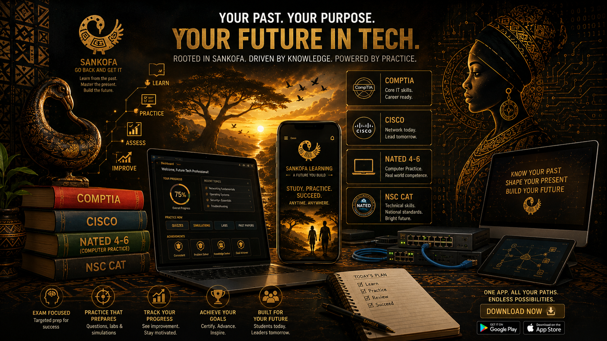
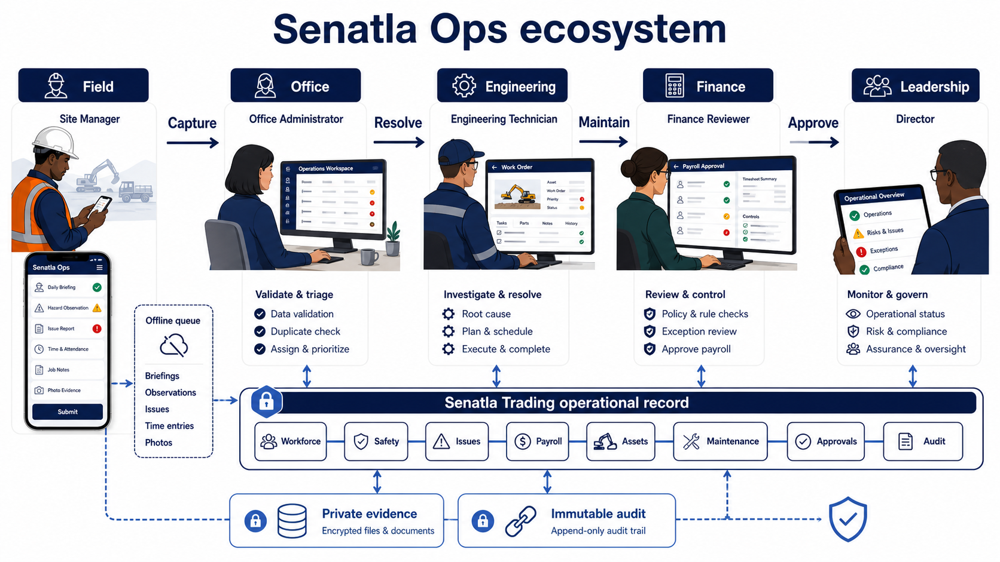
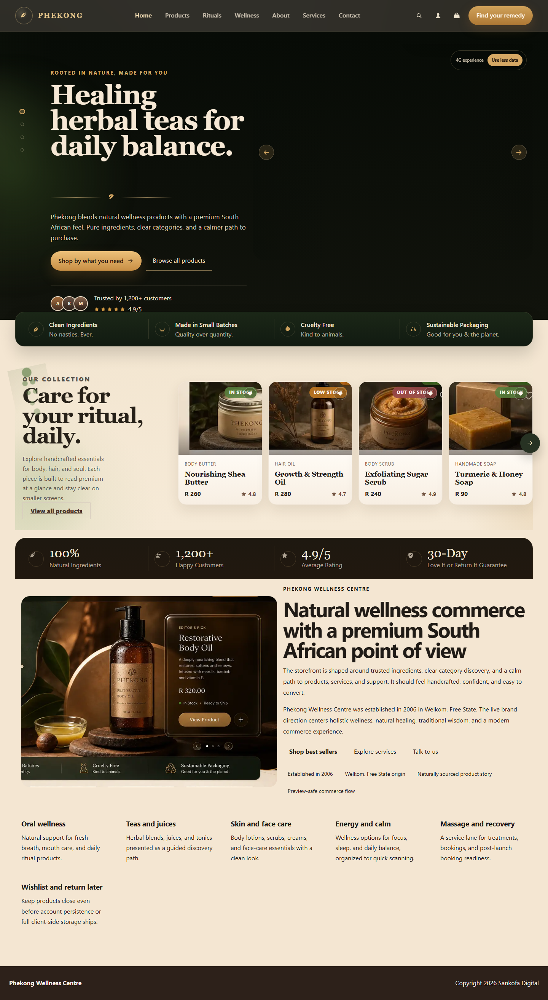

Discover the system
Map the current workflow, users, constraints and decisions before technology gets chosen.
Discovery and product directionBespoke product engineering · South Africa
We turn complex workflows into clear, durable products for teams doing important work.
Custom platforms, mobile-first delivery, and a clear handover.

Software shaped around your people, decisions and operating reality.
Useful on the devices, networks and constraints your team actually has.
Clear boundaries, documented decisions and a handover your team can use.
Selected work
Selected systems for education, operations and commerce. Each status is deliberate.

Guided learning paths with lecturer controls, practice evidence and release checks.

Field records, assets, approvals and audit evidence in one role-controlled system.

Commerce, booking and inventory for a South African wellness brand.
What we do
Three focused ways to move from a stuck workflow to a useful product.
Map the current workflow, users, constraints and decisions before technology gets chosen.
Discovery and product directionDesign and engineer a focused platform, website, mobile experience or operational tool.
Custom platforms and productsLeave behind a working increment, known limits, documentation and a practical next step.
See the delivery processHow we work
Every stage gives you something you can inspect, use or decide from.
Explore the processCurrent-state map and scope boundary.
Prototype, priorities and technical direction.
Working increment with reviewable evidence.
Release notes, known limits and next step.
A better first conversation
Tell us what is difficult, who it affects and what a useful outcome would look like.
Start a conversation